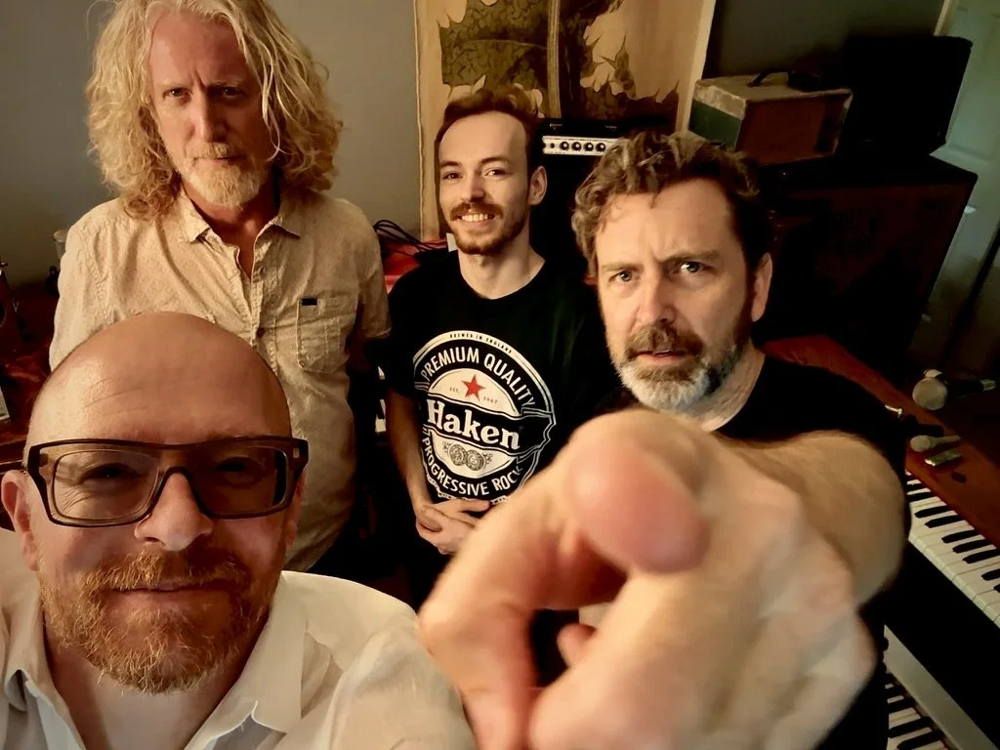

Keyboard-driven, extraordinary original music, born in Atlanta, Georgia. Rife with odd musical proclivities, this band takes every left turn it can find, but all while interweaving hooks and melodies uncommon in the overall rock genre. And yes — it is rock. And pop. And funk. And borders on flavors of prog metal, at its weirdest.
Listen
“Now That I'm Gone”
The Contraptions
The band consists of a wily cast of characters.
- Mark Alden Ross A wickedly funky songwriter who's bent on making music with all manner of vintage keyboards.
- Pierce Tanner Holds it all together on the drums, and his background remains shrouded in mystery.
- Colin Bragg The incomparable Colin brings his bass prowess, on an arsenal of bottom end weaponry.
Contact the Contraptions
Book us, reach out, or let us add you to our correspondence and let you know about upcoming releases and show dates.
Email the band